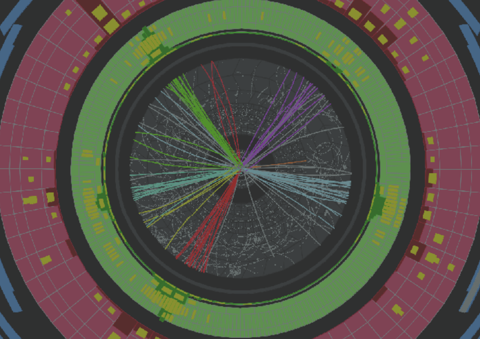
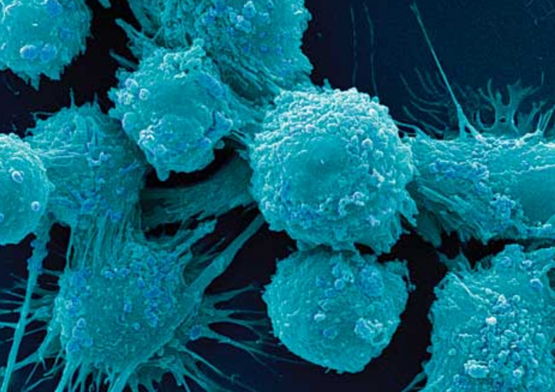

Supersymmetry is one of the theories that can explain the origin of Dark Matter. At the LHC I looked for collisions that could contain supersymmetric particles.

Standard Model
The equations that govern the strong force (quantum chromodynamics) are extremely hard to solve. Using LHC data, I performed measurements to help find out where the calculations break down.

Tumour modelling
Modelling the radiobiological events in the life of tumour cells subject to radiation, using a combination of population equations and patient-specific images, can help us predict treatment outcomes.
Radiomics
The large-scale analysis of quantitative features extracted from medical scans can provide a large amount of information. I am trying to find out if the texture of CT scans can help us identify spatial regions with different underlying tumour microenvironment.
Imaging genomics
Breast cancer is one of the most common forms of cancer. I work on generating a model that can guide the treatment taking into account each patient's molecular and imaging profile.